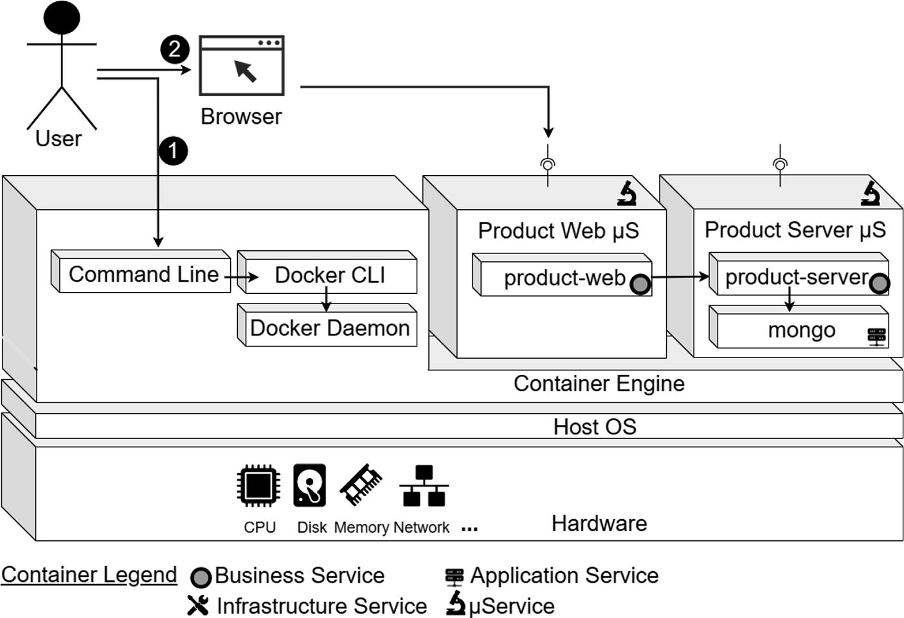
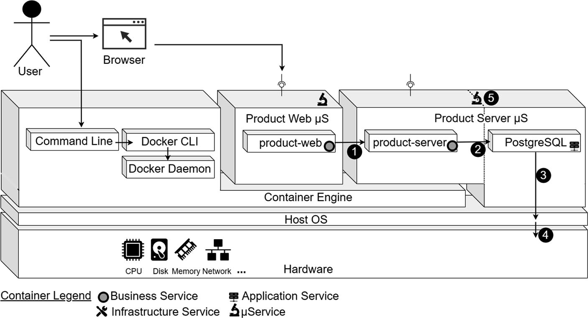
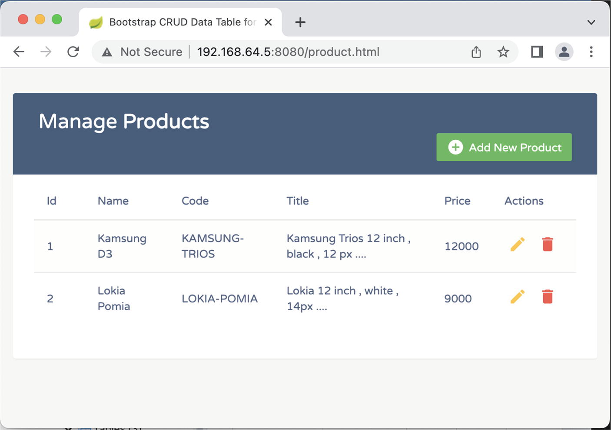
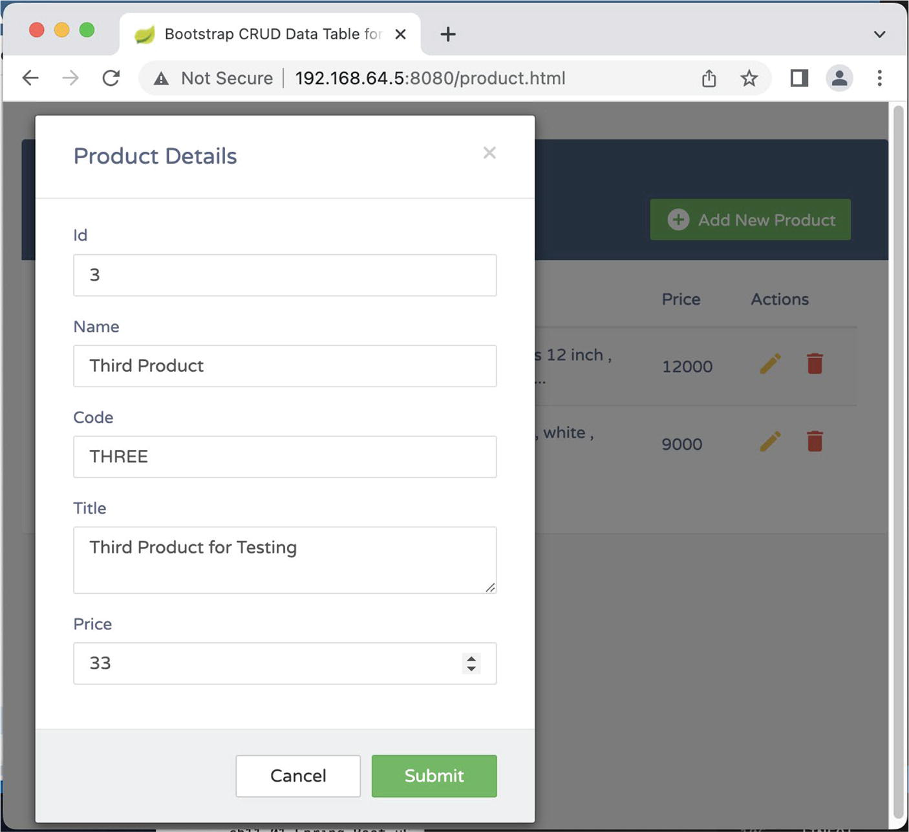
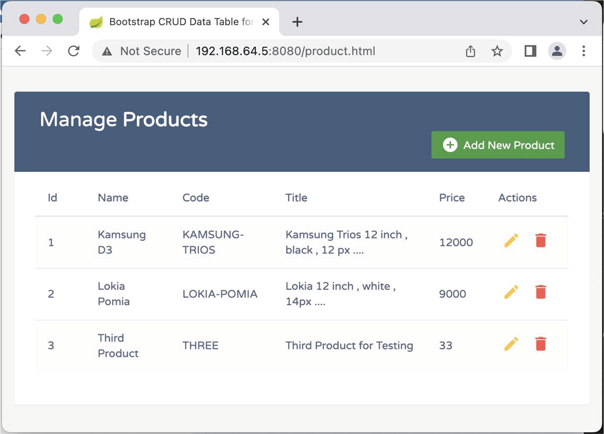
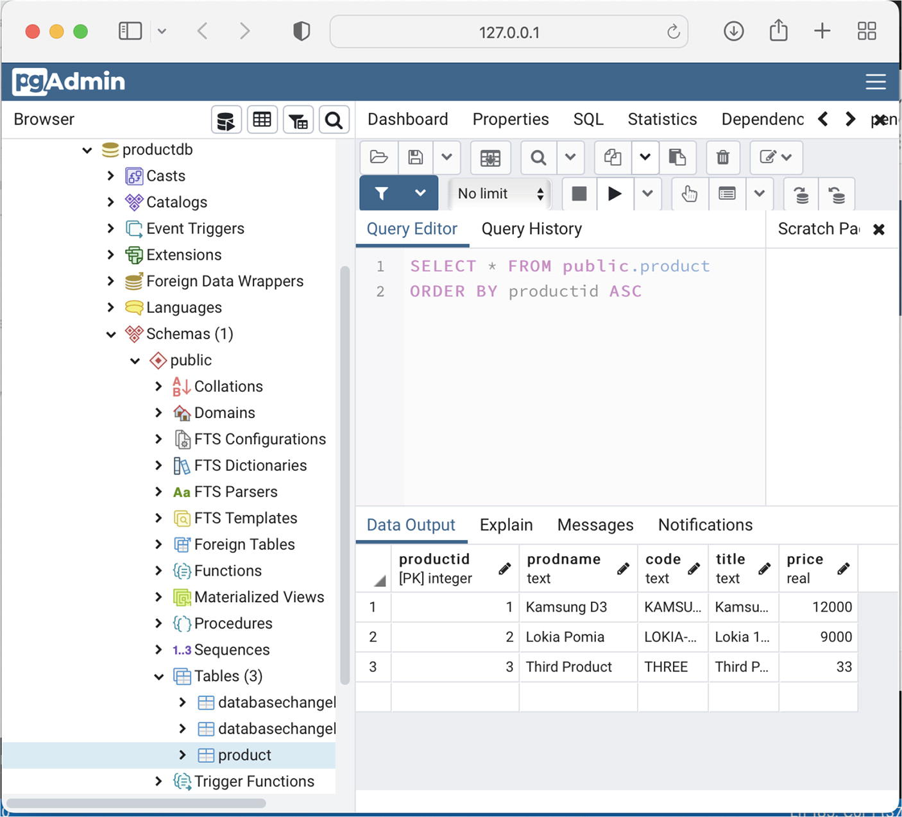
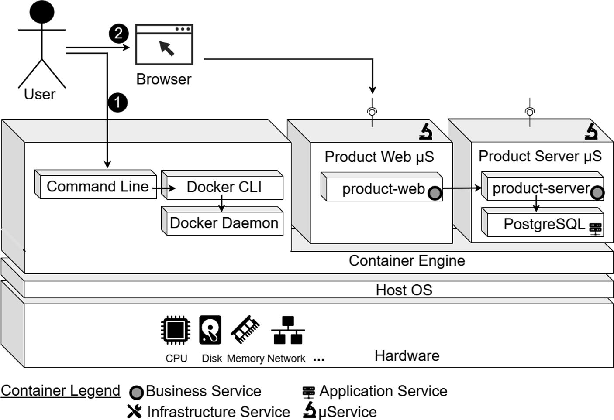
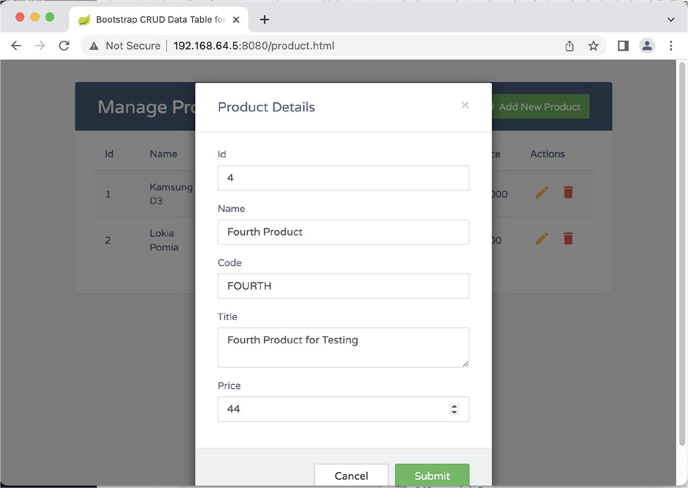
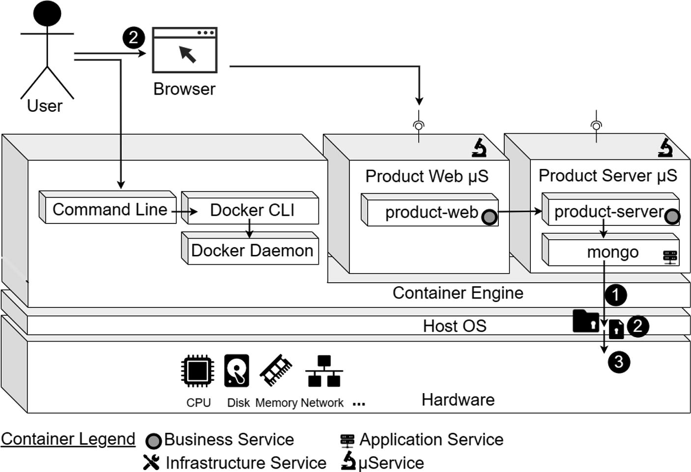

NBCRA 45, Christbin, Thiruvananthapuram, Kerala, India
The initial chapters introduced microservices, which are self-contained, independent application units, each fulfilling related business functionalities from a specific domain. Each of them, or a collection of them together, can be considered an application in its own. In a multi-microservice application, you create many microservices for your app. What if you decide to build several microservices with different technology stacks? Your team will soon be in trouble, as developers have to manage even more environments than they would have been dealing with in a classical monolithic application development scenario. With Docker, it’s possible to manage, deploy, and even reduce performance overhead of hundreds if not thousands of microservices on the same server. Docker containers require fewer computing resources than virtual machines, and containers also provide required isolation so that disparate technologies can coexist, side by side. Thus, containers are a natural fit with microservices.
Chapter 7 introduced how to run application containers using Docker images. This chapter continues that discussion, but with microservices examples that reflect real-life scenarios. Multiple microservices will interact, which means they need to communicate with each other. This chapter covers the following concepts:
Microservice containers connecting with each other
Microservice containers connecting to a PostgreSQL database on a host machine
Microservice containers connecting to PostgreSQL in a container
Microservice containers connecting to MongoDB in a container
To understand inter-container communications, you need to understand the networking options between containers, which is covered next.
Container Networking
Docker provides different ways to configure networking so that your containers can communicate with the outside world, whether with another server or with another Docker container. The next section briefly looks at these options.
Links
When you install Docker, Docker defaults to a bridge network that is created automatically. Docker’s networking subsystem is pluggable, using drivers. Before Docker introduced the networking feature, the Docker link feature enabled containers to discover each other and securely transfer information about one container to another. With the introduction of the Docker networking feature, you can still create links, but they behave differently compared to the default bridge network and the other user-defined networks. Even though the link option works, it is a legacy feature. The first example uses links; however, this feature may eventually be removed so you are advised to use other options (network) for this functionality. One feature that user-defined networks do not support, which you can do with a link today, is share environment variables between containers. But volumes provide better options to share environment variables between containers in a more controlled way.
Networks
There are multiple types of networks. I only mention them here because detailed explanations are beyond the scope of this book.
Bridge networks are best when you need multiple containers to communicate on the same Docker host.
Host networks are best when the network stack should not be isolated from the Docker host, but you want other aspects of the container to be isolated.
Overlay networks are best when you need containers running on different Docker hosts to communicate, or when multiple applications work together using swarm services.
Macvlan networks are best when you are migrating from a VM setup or need your containers to look like physical hosts on your network, each with a unique MAC address.
Third-party network plugins allow you to integrate Docker with specialized network stacks.
You will look at working code soon so that you can learn by doing.
Since you will be looking at multiple scenarios of container communications in this chapter, it makes sense to also understand how to inspect container logs, which is covered next.
Container Logs
You learned that Docker is an operating system-level virtualization platform and hence it allows you to run multiple applications containers in the same host at the same time. It facilitates the separation of applications and infrastructure, but when you have many applications in the same infrastructure, you need a way to troubleshoot when things don’t go as intended. Docker Logs helps you here.
Console Output Logging
When you run a container, you can immediately see the STDOUTlogs in the console. You saw this in Listing 7-28 in Chapter 7, which is reproduced in Listing 8-1 here.
(base) binildass-MacBook-Pro:ch07-02 binil$ docker run -it -p 8080:8080 binildas/product-web
Status: Downloaded newer image for binildas/product-web:latest
. ____ _ __ _ _
/\\ / ___'_ __ _ _(_)_ __ __ _ \ \ \ \
( ( )\___ | '_ | '_| | '_ \/ _` | \ \ \ \
\\/ ___)| |_)| | | | | || (_| | ) ) ) )
' |____| .__|_| |_|_| |_\__, | / / / /
=========|_|==============|___/=/_/_/_/
:: Spring Boot :: (v3.2.0)
2022-05-27 05:12:40 INFO StartupInfoLogger.logStarting:55 - Starting EcomProductMicroserviceA...
2022-05-27 05:12:40 DEBUG StartupInfoLogger.logStarting:56 - Running with Spring Boot ...
Listing 8-1
Running Product Web Microservice Using Docker
This command follows the logs like the Linux shell tail -f command. In Linux, with --follow (-f), tail defaults to following the file descriptor.
From Listing 7-30 in Chapter 7, you learned that the container ID is e95b2b5eb64e. You can use these IDs to view the container logs, as shown in Listing 8-2.
In Listing 8-2, the logs will contain the data of the output stream with the timestamp. However, this command doesn’t contain the continuous log output. To view the continuous log output of your container, you need to use the –follow option in the docker logs command, as shown in Listing 8-3.
Viewing Product Web Microservice Container Logs Continuously
This –follow option is a very useful Docker option, since it allows you to monitor the live logs of a container.
With this little introduction, it’s time to move on to the code.
Microservice and MongoDB Containers Using Links
This example reuses the microservices from the section titled “Microservices Using MongoDB and CrudRepository” in Chapter 3. It uses the same two microservices—a consumer and a provider microservice communicating each other using the REST protocol. The provider microservice also interacts with a MongoDB. Refer to Figure 2-1 in Chapter 2 for the overall design.
Designing the Container Topology
From this design in Figure 2-1 in Chapter 2, you also need to define a container-based deployment topology. This is shown in Figure 8-1.

A diagram illustrates the microservices container topology. It includes user, browser, container engine, host O S, and hardware.
Figure 8-1
Microservices container topology design
A consumer and a provider microservice communicate with each other using the REST protocol. Product Web microservice is the consumer microservice, which will be deployed as a single container. The provider microservice also interacts with a NoSQL database, MongoDB. Therefore, the deployment involves two containers—one for the Product Server component and the other for the MongoDB component. Here, the Product Web and Product Server containers provide business services, whereas the Mongo container provides application services for persisting data.
Also note another aspect in Figure 8-1. The Product Server and MongoDB containers are grouped together and are so called as a single microservice, the Product Server microservice. This follows the standard conventions of microservices, where you define that a microservice is a self-contained unit owning its own data.
Also note two kinds of interactions with the user doing with the deployment:
The command-line interface, or CLI, runs in what is called userspace memory, as a deployment management interface. This program runs just like other programs that run on top of the operating system. Programs running in the userspace can’t modify kernel space memory. The operating system is the interface between the user programs and the hardware that the computer is running on.
The user uses a browser to access the business functionality from the business services
Docker Engine and Docker CLI are two programs running in the userspace when you run Docker. Figure 8-1 shows three containers running. Each container is running as a child process of the Docker engine, wrapped with a container, and the delegate process is running in its own memory subspace of the userspace. Programs running inside a container cannot access memory and resources scoped by the neighbor container.
Further, in a way Figure 8-1 represents a logical view of microservices deployment too. While at an infrastructure architecture level the container deployment makes more sense, it’s the microservice architecture view that is more relevant to the application architect, hence I have shown that in the figure. That is why even though Product Server and MongoDB are deployed as two separate containers, I have logically grouped them together to represent the single Product Server microservice. This specific instance of MongoDB is wholly owned by the Product Server microservice, and entities outside the Product Server microservice may not be concerned about this MongoDB instance for any reason.
Understanding the Source Code
The source code for this book is available on GitHub via the book’s product page, located at www.apress.com/9798868805547. The code for this example is organized inside the ch08\ch08-01 folder. The source code in this example is similar to ch03\ch03-02, which was explained in detail in Chapter 3. What you need to understand more is the deployment schema, which is covered in the next section.
Run Containers Using Dockerfiles
Chapter 7 introduced how to build Docker images of microservices. This section extends that knowledge by building multiple microservice images.
The first step is to start Minikube single-node Kubernetes cluster so that you have a Docker Daemon up. Refer to Appendix E for a quick reference to the container commands.
For all the examples in this chapter, I assume the previous two steps that connect to the Docker Daemon to be executed if you are using the Minikube single-node Kubernetes cluster.
Listing 8-4 shows the commands organized into a single utility script.
docker run -d -it -p 27017:27017 --name mongo mongo:3.6
docker run -d -p 8081:8081 --link mongo:mongo --name product-server ecom/product-server
docker run -d -p 8080:8080 --link product-server:product-server --name product-web ecom/product-web
Listing 8-4
Script to Build and Run Microservices Docker Containers (ch08\ch08-01\makeandrun.sh)
The first line builds both microservices and packages them into .jar files, one by one. The second and third lines build Docker images using the .jar files. This build utilizes the Dockerfile you saw in Listing 7-35 in Chapter 7, which is reproduced here in Listing 8-5.
FROM openjdk:8-jdk-alpine
VOLUME /tmp
ARG JAR_FILE
COPY ${JAR_FILE} ecom.jar
ENTRYPOINT ["java","-jar","/ecom.jar"]
Listing 8-5
The Dockerfile (ch08\ch08-01\Dockerfile)
The Dockerfile is template-enabled, so that the actual value of the .jar file can be parameterized along with the build command. See Listing 8-6.
In Listing 8-4, the second and third command use the same Dockerfile as in Listing 8-5, but they utilize different .jar file paths during the build, and thus they build ecom/product-web:latest and ecom/product-server:latest and run the corresponding containers. Listing 8-6 reveals three containers instantiated from the last three log lines. Two are for the two business microservices (Product Server and Product Web) and the third line is for the MongoDB container you instantiated.
The MongoDB is an independent container. As shown in Figure 8-1, the Product Server depends on MongoDB and Product Web depends on Product Server. These dependencies are specified explicit using links in the deployment scripts in Listing 8-4.
Once the containers are up and running, you can list the running containers. See Listing 8-7.
CONTAINER ID IMAGE COMMAND CREATED STATUS PORTS NAMES
f19bb132fa30 ecom/product-web "java -jar /ecom.jar" About a minute ago Up 59 seconds 0.0.0.0:8080->8080/tcp product-web
03c80c666627 ecom/product-server "java -jar /ecom.jar" About a minute ago Up About a minute 0.0.0.0:8081->8081/tcp product-server
e0e9a00ce90d mongo:3.6 "docker-entrypoint.s..." About a minute ago Up About a minute 0.0.0.0:27017->27017/tcp mongo
...
(base) binildass-MacBook-Pro:ch08-01 binil$
Listing 8-7
List the Running Containers
Since the–d option is for running the containers, they are running as background daemon child processes. It would be convenient to keep watching the terminal logs while you access the application.
Note the container IDs from Listing 8-7. You can use these IDs to view the logs, as shown in Listings 8-8 and 8-9.
2022-05-30 04:44:30 INFO InitComponent.init:62 - End
2022-05-30 04:44:35 INFO Startup.log:61 - Started EcomProd...
Listing 8-9
Product Web Container Logs
Testing the Microservice Containers
Once the microservices are up and running, you can access the Product Web microservice. However, as mentioned in Appendix E, you have to get the Minikube IP first. See Listing 8-10.
(base) binildass-MacBook-Pro:ch07-02 binil$ minikube ip
192.168.64.5
(base) binildass-MacBook-Pro:ch07-02 binil$
Listing 8-10
Finding Minikube IP
You can now access the Product Web microservice using a browser with the URL formed with the Minikube IP.
http://192.168.64.5:8080/product.html
Refer to the section titled “Test the Microservice Using UI” in Chapter 1 to test the Product Web microservice container. While you test the microservices, keep watching the log windows.
Once you complete the testing process, you can stop and remove the microservice containers and clean the environment. The environment cleanup steps are automated in the script in Listing 8-11.
mvn -Dmaven.test.skip=true clean
docker stop product-web
docker stop product-server
docker stop mongo
docker rm product-web
docker rm product-server
docker rm mongo
docker rmi -f ecom/product-web
docker rmi -f ecom/product-server
Listing 8-11
Script Automating the Environment Cleanup (ch08\ch08-01\clean.sh)
You can execute the script in Listing 8-12 to stop and remove the microservice containers and clean the environment.
Stopping Microservice Containers and Cleaning the Environment
The next example slightly modifies the current example to use a network in place of a link.
Microservice and MongoDB Containers Using a Network
In this section, you are going to reuse the same microservices visited in the section titled “Microservices Using MongoDB and CrudRepository” in Chapter 3, which you ran in the previous section of this chapter. You will have the same two microservices—a consumer and a provider microservice communicating each other using the REST protocol. The provider microservice also interacts with a MongoDB. Refer to Figure 2-1 in Chapter 2 for the overall design.
Designing the Container Topology
You reuse the deployment schema defined in the previous example in this chapter, as shown in Figure 8-1. The only change is that you will replace link with net for the network connectivity option between the containers.
Understanding the Source Code
The source code for this book is available on GitHub via the book’s product page, located at www.apress.com/9798868805547. The code for this example is organized inside the ch08\ch08-02 folder. The source code in this example is very similar to ch03\ch03-02, which I explained in detail in Chapter 3, and which you deployed in the previous example of this chapter.
Run Containers Using Dockerfiles
You will modify the scripts alone in the previous example in this chapter. Listing 8-13 shows the commands organized into a single script.
docker run -d -it -p 27017:27017 --name mongo --net=ecom-network mongo:3.6
docker run -d -p 8081:8081 --net=ecom-network --name product-server ecom/product-server
docker run -d -p 8080:8080 --net=ecom-network --name product-web ecom/product-web
Listing 8-13
Script to Build and Run Microservices Docker Containers (ch08\ch08-02\makeandrun.sh)
Note the network creation command. This is the simplest form of the create network command, and yet it will probably be the one you will use most often. It takes a default driver (you haven’t specified a driver, hence the default one will be used, which is bridge). When you create the network, an ID is created. You can later use this identifier to refer to this network when connecting containers to it or when inspecting the network’s properties.
The Dockerfile for this example is the same Dockerfile you used in the previous example, which is shown in Listing 8-5.
Listing 8-14 builds the microservices and docker images and then runs the containers.
Executing the Script to Build and Run the Microservices
You need to newly create the ecom-network in Listing 8-13, so you need to view the creation status. See Listing 8-15.
(base) binildass-MacBook-Pro:ch08-02 binil$ docker network ls
NETWORK ID NAME DRIVER SCOPE
435b063e810b bridge bridge local
129e1b5f4de5 ecom-network bridge local
28731f4db9e0 host host local
2480825a3deb none null local
(base) binildass-MacBook-Pro:ch08-02 binil$
Listing 8-15
Listing the Docker Networks
The network ls command simply lists networks available for your containers. It will output the network identifier, its name, the driver being used, and a scope of the network.
To list all the containers you have on your system, execute the docker ps command. See Listing 8-16.
As you can see in Listing 8-17, the newly created network uses the bridge driver, as is evident in "Driver": "bridge". Even if you haven’t explicitly asked for it, it’s the default. The Containers section lists the three containers to which you earlier connected this network.
Note the container IDs from Listing 8-16. You can use these IDs to view the logs.
2022-06-02 10:06:23 INFO StartupInfoLogger.logStarted:61 - Started EcomProductMicroserviceApplication in 9.058 seconds (JVM running for 10.648)
...
Listing 8-19
Viewing Product Web Container Logs
Once the containers are up and running, you can test the application.
Testing the Microservice Containers
Since both microservices are up and running, you can access the Product Web microservice. However, as mentioned in Appendix E, you have to get the minikube IP first. See Listing 8-20.
(base) binildass-MacBook-Pro:ch07-02 binil$ minikube ip
192.168.64.5
(base) binildass-MacBook-Pro:ch07-02 binil$
Listing 8-20
Finding Minikube IP
You can now access the Product Web microservice using a browser with the URL formed with the Minikube IP.
http://192.168.64.5:8080/product.html
Refer to the section titled “Test the Microservice Using UI” in Chapter 1 to test the Product Web microservice container. While you test the microservices, keep watching the log windows.
Once you complete the testing process, stop and remove the microservice containers and clean the environment. The environment cleanup steps are automated in a script, as shown in Listing 8-21.
mvn -Dmaven.test.skip=true clean
docker stop product-web
docker stop product-server
docker stop mongo
docker rm product-web
docker rm product-server
docker rm mongo
docker rmi -f ecom/product-web
docker rmi -f ecom/product-server
docker network rm ecom-network
Listing 8-21
Script Automating the Environment Cleanup (ch08\ch08-02\clean.sh)
You can now execute this script to stop and remove the microservice containers and clean the environment. See Listing 8-22.
(base) binildass-MacBook-Pro:ch08-02 binil$ sh clean.sh
Stopping Microservice Containers and Cleaning the Environment
Microservice Container with PostgreSQL in Host
This example reuses the microservices from the section titled “Microservices Using PostgreSQL and RestTemplate” in Chapter 3. It includes the same two microservices—a consumer and a provider microservice communicating each other using the REST protocol. The provider microservice in this case interacts with a PostgreSQL database. Refer to Figure 2-1 in Chapter 2 for the overall design with the exception that this example uses a PostgreSQL database.
Designing the Container Topology
For this new design, you need to slightly tweak the container-based deployment topology in Figure 8-1. This is shown in Figure 8-2. The Product Web and Product Server microservices are containerized, but the plan here is to use a PostgreSQL database running outside a Docker container, directly on the host operating system.

A microservices container topology design. It includes user, browser, container engine, host O S, and hardware.
Figure 8-2
Microservices container topology design
There are a few aspects to be noted with respect to the numbered labels in Figure 8-2:
1.
The Product Web microservice connects to the Product Server microservice using networks between containers.
2.
To connect to the PostgreSQL database, it is not enough that the Product Server microservice uses container networking alone, instead you need to explicitly tell the Product Server microservice container about the IP details of the host machine where you are running PostgreSQL database.
3.
The PostgreSQL database is not containerized, so it doesn’t use any kind of virtualization. Instead, PostgreSQL is running directly on the host OS.
4.
PostgreSQL directly uses the host machine resources, especially for the data storage requirements.
5.
The Product Server microservice is not a physical organization; it’s a virtual grouping of the Product Server microservice container and the PostgreSQL database in the host machine together.
Let’s now look at why you need this kind of deployment architecture.
Orchestration tools like Docker are created with the assumption that they are stateless, which means that they should not save any data during the run. If containers are stateful they might end up having several containers of a certain type act differently even if they are instantiated from the same image. However, databases store state, so they are stateful. Because of this, a deployment architecture like the one shown in Figure 8-2 could work. Of course, for production purposes, this single database instance (or cluster) will be instead in a public cloud, perhaps as a DBaaS (Database as a Service) instead of the local host machine (assuming that you are using a cloud-based deployment).
Understanding the Source Code
The source code for this book is available on GitHub via the book’s product page, located at www.apress.com/9798868805547. The code for this example is organized inside the ch08\ch08-03 folder. Much of the source code in this example is similar to that in ch03\ch03-01, which was explained in detail in Chapter 3, in the section titled “Microservices Using PostgreSQL and RestTemplate.” You saw the deployment schema of multiple interacting microservices in the previous two example, so, in this example, emphasis is on connecting to a non-containerized database.
Container to PostgreSQL in Host Configuration
Since the Postgres database is running on the host system, you need to allow the Docker container running the Product Server microservice to connect to a local PostgreSQL database. Assuming you don’t want the container to share the network with the host (using --network host parameter while running it), the database and the container need to be configured to communicate.
Refer to these sections in Appendix C on PostgreSQL:
Opening a PostgreSQL server for remote clients
Opening PostgreSQL on a host machine for Docker clients
Those configurations should be enough to create a Postgre database running on a host system work with a containerized app.
Run Containers Using Dockerfiles
The ch08\ch08-03 folder contains the Maven scripts required to build the examples. As a first step, you need to bring up the PostgreSQL server. This example assumes you already have a PostgreSQL server running, and you have configured it as mentioned previously. You need to execute the following commands in Listing 8-23 to bring up PostgreSQL.
If you have already made the configurations required for the Postgres database running on a host system work with a containerized app in the previous section, you now need to tell the container about the host’s IP address. You can pass the host’s IP using the --add-host option, which is done in Listing 8-25. In this case, the host is a name of the host machine, and it will be added to the container’s /etc/hosts file. Inside the Docker container, you can use the name host to connect to the host system. You need to have the IP of the host where PostgreSQL is running, which you find in Listing 8-24.
The Dockerfile in this example is the same Dockerfile used in the previous example, which is shown in Listing 8-5.
Next, build the microservices and Docker images and then run the containers. You will modify the scripts in the previous example in this chapter. Listing 8-25 organizes the commands into a single script.
Script to Build and Run Microservices Docker Containers (ch08\ch08-03\makeandrun.sh)
To build the microservices and the Docker images and then run the containers, you need to execute the script in Listing 8-25, as shown in Listing 8-26.
2022-05-30 07:18:00 INFO StartupInfoLogger.logStarted:61 - Started EcomProductMicroserviceApplication in 8.835 seconds (JVM running for 10.646)
Listing 8-29
Viewing Product Web Container Logs
Once the containers are up and running, you are ready to test the application.
Testing the Microservice Containers
Since both microservices are up and running, you can access the Product Web microservice. However, as mentioned in Appendix E, you must get the Minikube IP first. See Listing 8-30.
(base) binildass-MacBook-Pro:ch07-02 binil$ minikube ip
192.168.64.5
(base) binildass-MacBook-Pro:ch07-02 binil$
Listing 8-30
Finding Minikube IP
You can now access the Product Web microservice using a browser with the URL formed with the Minikube IP (see Figure 8-3).
http://192.168.64.5:8080/product.html

A screenshot titled manage products has the following options. Id. Name. Code. Title. Price. Actions.
Figure 8-3
Accessing the microservices container using a browser
Refer to the section titled “Test the Microservice Using UI” in Chapter 1 to test the Product Web microservice container. While you test the microservices, keep watching the log windows.
You can add a new product to the application for testing, as shown in Figure 8-4.

A screenshot titled product details has the following fields. Id. Name. Code. Title. Price.
Figure 8-4
Adding a new product to test the microservice
Refresh your browser to view the newly added product, as shown in Figure 8-5.

A screenshot titled manage products has the following fields. It includes Id, name, code, title, price, and actions.
Figure 8-5
Refreshing the browser to view the newly added product
To make sure everything went as expected and your Product Server microservice has in fact persisted the data to the PostgreSQL database in the host machine, you can now inspect the PostgreSQL database. Refer to the section titled “Create Database in PostgreSQL Using pgAdmin” in Appendix C on how to use pgAdmin to interact with a PostgreSQL database. You can see this in Figure 8-6.

A screenshot titled admin has the following folders. Language. Schemas. Public. Product. The product folder is selected.
Figure 8-6
Viewing the newly added product using pgAdmin
Once you complete the testing process, you can stop and remove the microservice containers and clean the environment. The environment cleanup is automated in a script, as shown in Listing 8-31.
mvn -Dmaven.test.skip=true clean
docker stop product-web
docker stop product-server
docker rm product-web
docker rm product-server
docker rmi -f ecom/product-web
docker rmi -f ecom/product-server
docker network rm ecom-network
Listing 8-31
Script Automating the Environment Cleanup (ch08\ch08-03\clean.sh)
You can execute this script to stop and remove the microservice containers and clean the environment. See Listing 8-32.
(base) binildass-MacBook-Pro:ch08-03 binil$ sh clean.sh
[INFO] Scanning for projects...
...
product-web
product-server
product-web
product-server
Untagged: ecom/product-web:latest
...
Untagged: ecom/product-server:latest
...
ecom-network
(base) binildass-MacBook-Pro:ch08-03 binil$
Listing 8-32
Stopping Microservice Containers and Cleaning the Environment
Microservice and PostgreSQL in Container
You learned why it’s better to state-handle applications, including databases, to be deployed outside a Docker container, since containers are designed to be more efficient in stateless kind of operations. However, there are use cases where you might like to have your database in a container, such as in cases of rapid testing. In this section, you learn how to modify the example from the previous section to be fully deployed within a container infrastructure.
Designing the Container Topology
For the current design, you need to slightly tweak the container-based deployment topology shown in Figure 8-1 and replace MongoDB with PostgreSQL. This is shown in Figure 8-7. The Product Web and Product Server microservices are containerized, and the Product Server microservice will connect to a PostgreSQL database, again deployed as a container.

A diagram illustrates the container deployment topology for microservices. It includes user, browser, container engine, host O S, and hardware.
Figure 8-7
Container deployment topology for microservices
Here again, the Product Web and Product Server containers provide business services, whereas the PostgreSQL container provides application services for persisting state.
Understanding the Source Code
The source code for this book is available on GitHub via the book’s product page, located at www.apress.com/9798868805547. The code for this example is organized inside the ch08\ch08-04 folder. The source code in this example is very similar to ch03\ch03-01, which was explained in detail in Chapter 3, in the section titled “Microservices Using PostgreSQL and RestTemplate.” You also saw the deployment schema of multiple interacting microservices using a PostgreSQL database in the previous example. This section looks specifically into connecting to a containerized PostgreSQL database alone.
Connecting from a containerized microservice to a containerized PostgreSQL server is rather straightforward, so there is very little change to be made while running the containers alone. You will learn about that in the next section.
Run Containers Using Dockerfiles
The ch08\ch08-04 folder contains the Maven scripts required to build the examples. As a first step, you need to bring up the PostgreSQL server. The Dockerfile for this example is the same Dockerfile used in the previous three examples, and it is shown in Listing 8-5.
Next, build the microservices and the Docker images and then run the containers. You will modify the scripts in the previous example in this chapter. Listing 8-33 organizes the commands into a single script.
This first line pulls the Postgres Docker image from Docker Hub.
It then sets POSTGRES_DB, which is an optional environment variable used to define a different name for the default database that is created when the image starts. If it is not specified, the value of POSTGRES_USER will be used.
It then sets the POSTGRES_USER, which is an optional environment variable used in conjunction with POSTGRES_PASSWORD to set a user and its password. This variable will create the specified user with superuser power and a database with the same name (which I have overridden). If it is not specified, the default user of postgres will be used.
It then sets the POSTGRES_PASSWORD, which is an environment variable required for you to use the PostgreSQL image. It must not be empty or undefined. This environment variable sets the superuser password for PostgreSQL. The default superuser is defined by the POSTGRES_USER environment variable.
It then names (--name) the Docker container to be postgres-docker.
It maps the container’s internal 5432 port to external 5432 port, so you’ll be able to enter it from outside.
It then enables to run the Docker container in the background (-d).
If you want to enter into the database using a GUI application (like pgAdmin, psql, or so), you should now be able to do so.
You can build the microservices and the docker images and then run the containers, as shown in Listing 8-34.
2022-05-30 10:29:35 INFO InitializationComponent.init:74 - End
2022-05-30 10:29:37 INFO StartupInfoLogger.logStarted:61 - Started EcomProductMicroserviceApplication in 12.887 seconds (JVM running for 15.075)
...
Listing 8-36
Product Server Container Logs
Listing 8-36 shows the Product Server container logs. Note two rows are inserted as initial data in the database. Similarly, Listing 8-37 shows the product Web container logs.
2022-05-30 10:29:34 INFO StartupInfoLogger.logStarted:61 - Started EcomProductMicroserviceApplication in 8.81 seconds (JVM running for 10.568)
...
Listing 8-37
Product Web Container Logs
Once the containers are up and running, you can test the application.
Testing the Microservice Containers
Since the microservices and database containers are up and running now, you can access the Product Web microservice. However, as mentioned in Appendix E, you have to get the minikube IP first. See Listing 8-38.
(base) binildass-MacBook-Pro:ch07-02 binil$ minikube ip
192.168.64.5
(base) binildass-MacBook-Pro:ch07-02 binil$
Listing 8-38
Finding Minikube IP
You can now access the Product Web microservice using a browser with the URL formed with the Minikube IP.
http://192.168.64.5:8080/product.html
Refer to the section titled “Test the Microservice Using UI” in Chapter 1 to test the Product Web microservice container. While you test the microservices, keep watching the log windows.
You can also access the PostgreSQL server in the Docker container using the psql terminal. Refer to the Appendix C section titled “Run Commands Against PostgreSQL Server Using psql” to get an overview of various terminal commands. See Listing 8-39.
After verifying the initial data created by Product Server microservice in the PostgreSQL container, you can add a new product to the application for testing purposes, as shown in Figure 8-8.

A screenshot titled product details has the following fields. Id. Name. Code. Title. Price.
Figure 8-8
Adding a new product to test the microservice
Refresh your browser to view the newly added product. You can also refresh your terminal query to access the PostgreSQL server in the Docker container using the psql terminal, as shown in Listing 8-40.
As in Listing 8-40, you can verify that the newly inserted product through the Product Web microservice web app is safely persisted in the PostgreSQL database inside the container. Once you complete testing the microservices, you can then stop and remove the microservice containers and clean the environment using the script shown in Listing 8-41.
mvn -Dmaven.test.skip=true clean
docker stop product-web
docker stop product-server
docker stop postgres-docker
docker rm product-web
docker rm product-server
docker rm postgres-docker
docker rmi -f ecom/product-web
docker rmi -f ecom/product-server
docker network rm ecom-network
Listing 8-41
Script Automating the Environment Cleanup (ch08\ch08-04\clean.sh)
You can execute the script shown in Listing 8-42 to stop and remove the microservice containers and clean the environment.
(base) binildass-MacBook-Pro:ch08-04 binil$ sh clean.sh
...
product-web
product-server
postgres-docker
product-web
product-server
postgres-docker
Untagged: ecom/product-web:latest
...
Untagged: ecom/product-server:latest
...
ecom-network
(base) binildass-MacBook-Pro:ch08-04 binil$
Listing 8-42
Stopping Microservice Containers and Cleaning the Environment
You have now seen many examples exploring different scenarios of using containers with SQL and No SQL databases. Next, the chapter extends this learning to one more aspect—container storage.
Container Storage
Chapter 7 explained that the Docker container filesystem is predominantly read-only and is a kind of temporary by default. When you start up a Docker image by running the container, you’re placing a read-write layer on top of the lower layer file stack. You can create, modify, and delete files as you wish. Only when you commit the changes back into the image do they become persisted. This is not very convenient when it comes to storing and retrieving data, which is supposed to be non-volatile. A better option is to separate the container lifecycle from the data it manages. You can keep these separate, so that the data managed (or being used) by your application is not destroyed or tied to the container lifecycle and can thus be reused.
Separating long-lived data from containers is done via volumes, which this section investigates. Volumes are not part of the union filesystem, and so the write operations are instant and as fast as possible and there is no need to commit any changes. Since volumes live outside of the union filesystem, they exist as normal directories and files on the host filesystem.
Volumes
Volumes are the preferred mechanism for persisting data generated by and used by Docker containers. Volumes are better than a container’s writable layer in persisting long-term data. Volumes do not increase the size of the containers using them, and the volume’s contents exist outside the lifecycle of a given container.
There are two ways to create volumes:
Specify the -v option when running an image.
Use the command to create a volume prior to starting a container.
Let’s look at the first option here, which you will also use in the next example.
You can create a volume using the -v switch and instruct Docker that the host directory /Users/binil/dockerbook/ch08-05/mongodata should be mapped into the /data/db directory in the running Mongo container.
Let’s straight look into an example.
Microservice and MongoDB Containers Using File Mount
This example reuses the same microservices from the section titled “Microservices using MongoDB and CrudRepository” in Chapter 3. The same two microservices are used—a consumer and a provider microservice communicating each other using the REST protocol. The provider microservice also interacts with a MongoDB. Different from the first two MongoDB examples in this chapter, this example uses volumes to persist the Mongo database data. Refer to Figure 2-1 in Chapter 2 for the overall design.
Designing the Container Topology
This example reuses the deployment schema defined in the first example in this chapter. However, there is a change—you will use volume mount here. See Figure 8-9.

A diagram illustrates the container deployment topology for microservice. It includes user, browser, container engine, host O S, and hardware.
Figure 8-9
Container deployment topology for microservice
This example uses the -v options so that the directory on the host operating system will be available for the container in this modified example. The volume created in this manner is a kind of mapped directory. This mapped directory will be available for the container and it is also available from the host operating system. Any files already in the mapped directory will also be available inside the container; they will not be deleted during the mapping step. Referring to the numbered labels in Figure 8-9, you may note these aspects:
Since you have mapped the volume using the –v option, the persistence-related commands from the Mongo container are delegated to the filesystem abstraction.
The filesystem abstraction of the operating system can organize the Mongo database’s data into files, directories, and other related constructs.
At the hardware layer, a storage device is used to retain digital data, which could be a magnetic disk, a semiconductor device, and so on.
Since this example uses a persistence mechanism outside the container, so you must also verify that the data persisted to the storage has the capability to overcome container lifecycle.
Understanding the Source Code
The source code for this book is available on GitHub via the book’s product page, located at www.apress.com/9798868805547. The code for this example is organized inside the ch08\ch08-05 folder. Much of the source code in this example is similar to ch03\ch03-02, which was explained in detail in Chapter 3. Also, the source code for this example is like the first two examples in this chapter. Compared to the second example in this chapter, the change is that you will use the -v options so that the directory on the host operating system will be available for the container.
Run Containers Using Dockerfiles
The ch08\ch08-05 folder contains the Maven scripts required to build the examples. As a first step, you need to bring up the PostgreSQL server. The Dockerfile for this example is the same Dockerfile used in the previous four examples, and it is shown in Listing 8-5.
Next, build the microservices and the docker images and then run the containers. You need to modify the scripts from the previous example. Listing 8-43 shows the commands organized into a single script.
docker run -d -p 8081:8081 --net=ecom-network --name product-server ecom/product-server
docker run -d -p 8080:8080 --net=ecom-network --name product-web ecom/product-web
Listing 8-43
Script to Build and Run Microservices Docker Containers (ch08\ch08-05\makeandrun.sh)
One extra aspect you need to note here is the additional step of creating a folder for hosting the data files and pointing that file as the volume for the Mongo container. The folder is auto-created in the Minikube VM, since this example uses Docker within Minikube. Remember, all of this will be lost when you stop the Minikube. If you are using Docker in a host machine, you can manually create this folder too.
Listing 8-44 shows you how to build the microservices and Docker images and then run the containers.
(base) binildass-MacBook-Pro:ch08-05 binil$ sh makeandrun.sh
...
Successfully tagged ecom/product-web:latest
Successfully tagged ecom/product-server:latest
(base) binildass-MacBook-Pro:ch08-05 binil$
Listing 8-44
The Dockerfile Build and Run Commands
To list all the containers you have on your system now, execute the docker ps command, as shown in Listing 8-45.
(base) binildass-MacBook-Pro:~ binil$ docker ps
CONTAINER ID IMAGE COMMAND CREATED STATUS PORTS NAMES
5e4c172b0e83 ecom/product-web "java -jar /ecom.jar" 50 seconds ago Up 50 seconds 0.0.0.0:8080->8080/tcp product-web
24f369a0359d ecom/product-server "java -jar /ecom.jar" 51 seconds ago Up 50 seconds 0.0.0.0:8081->8081/tcp product-server
bf4ccedcd7b4 mongo:3.6 "docker-entrypoint.s..." 51 seconds ago Up 51 seconds 0.0.0.0:27017->27017/tcp mongo
...
(base) binildass-MacBook-Pro:~ binil$
Listing 8-45
List the Docker Containers
Now you can inspect if and how the data folder is created. Since the Docker environment is within Minikube, you need to investigate the Minikube VM for this data folder, as shown in Listing 8-46.
2022-05-30 13:55:07 INFO InitializationComponent.init:47 - Start...
2022-05-30 13:55:07 DEBUG InitializationComponent.init:51 - Deleting all existing data on start...
2022-05-30 13:55:07 DEBUG InitializationComponent.init:56 - Creating initial data on start...
2022-05-30 13:55:08 INFO InitializationComponent.init:105 - End
2022-05-30 13:55:12 INFO StartupInfoLogger.logStarted:61 - Started EcomProductMicroserviceApplication in 9.964 seconds (JVM running for 11.603)
...
Listing 8-47
Product Server Container Logs
Listing 8-47 shows the Product Server container logs. Note that two rows are inserted as initial data in the database. Similarly, Listing 8-48 shows the Product Web container logs.
2022-05-30 13:55:11 INFO StartupInfoLogger.logStarted:61 - Started EcomProductMicroserviceApplication in 8.539 seconds (JVM running for 10.306)
...
Listing 8-48
Product Web Container Logs
Once the containers are up and running, you can test the application.
Testing the Microservice Containers
Since the microservices and database containers are up and running, you can access the Product Web microservice. However, as mentioned in Appendix E, you must get the minikube IP first. See Listing 8-49.
(base) binildass-MacBook-Pro:ch07-02 binil$ minikube ip
192.168.64.5
(base) binildass-MacBook-Pro:ch07-02 binil$
Listing 8-49
Finding Minikube IP
You can now access the Product Web microservice using a browser with the URL formed with the Minikube IP.
http://192.168.64.5:8080/product.html
Refer to the section titled “Test the Microservice Using UI” in Chapter 1 to test the Product Web microservice container. While you test the microservices, keep watching the log windows.
Now bring down the running Mongo container, shown in Listing 8-50.
List the newly created Mongo container and assert that it’s a new container (ID). See Listing 8-52.
(base) binildass-MacBook-Pro:~ binil$ docker ps
CONTAINER ID IMAGE COMMAND CREATED STATUS PORTS NAMES
a3b84961b0a7 mongo:3.6 "docker-entrypoint.s..." 11 seconds ago Up 10 seconds 0.0.0.0:27017->27017/tcp mongo
...
(base) binildass-MacBook-Pro:~ binil$
Listing 8-52
Listing DockerContainers
Now access the Product Web microservice using a browser with the URL formed with the Minikube IP.
http://192.168.64.5:8080/product.html
You can now verify that the date that has been originally created and managed by the earlier Mongo container is still safe. Once you complete testing the microservices, you can then stop and remove the microservice containers and clean the environment. See Listing 8-53.
(base) binildass-MacBook-Pro:ch08-05 binil$ sh clean.sh
Stopping Microservice Container and Cleaning Environment
Summary
You started your container and Docker journey in Chapter 7, and in this chapter, you extended that learning by exploring multiple combinations of microservice containers and database containers that interact with each other. There is one thing left, which is the containerization of the message broker. This is covered in the next chapter, where I demonstrate Kafka containers with the help of Docker Compose. Don’t miss the next chapter, since you will then be equipped with the basic tools you need to create serious microservice applications on containers.